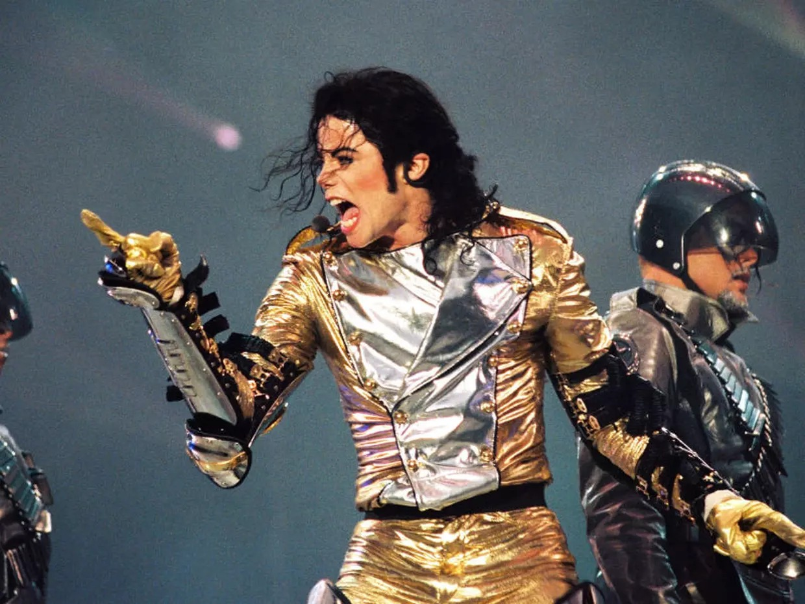
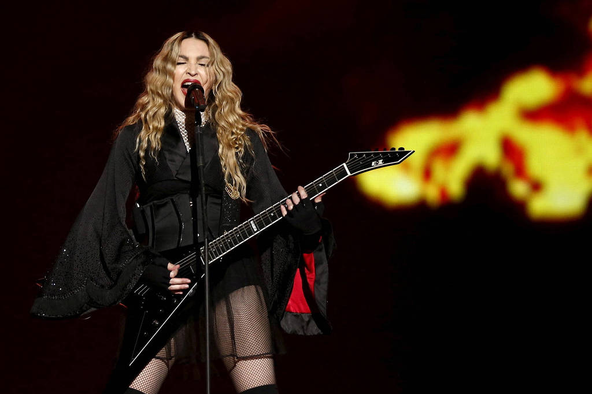
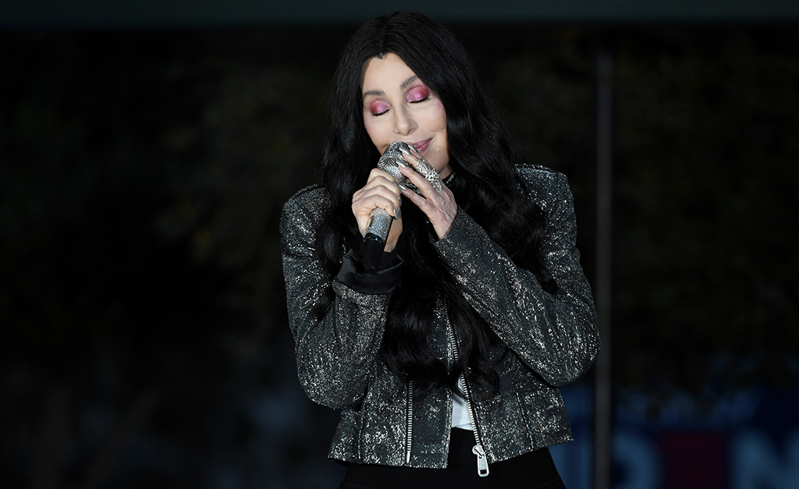

Música Pop
A música pop (em inglês: pop music; um termo que deriva da abreviação de "popular") é um gênero da música popular que se originou durante a década de 1950 nos Estados Unidos e Reino Unido
A música pop é eclética, e muitas vezes incorpora elementos de outros estilos, como o urban, dance, rock, música latina, soul e country.
No entanto, existem elementos principais que definem a música pop as canções do gênero são geralmente de duração média-curta, escritas em um formato básico (muitas vezes a estrutura verso-refrão), empregam refrães e batidas repetidas, ganchos, são super produzidas, as letras abordam temas universais, como amor - nada específico demais para atingir um maior número de pessoas -, o que torna a música pop facilmente atraente a qualquer ouvinte, por isto é o gênero musical mais comercial.
Clique aqui para saber mais
Principais características:
- Objetivo de atração a um público geral ao invés de a uma subcultura específica ou uma ideologia
- Ênfase no artesanato em vez das qualidades "artísticas" padronizadas
- Tendência de refletir tendências atuais a desenvolvimentos contínuos
- Muito da música pop é feito em função de dançar ou usa batidas e ritmos destinados à dança
Maiores Artistas Pop's de todos os tempos:
- Michael Jackson

- Madonna

- Cher

- Elton John
- Cyndi Lauper
Maiores Artistas Pop's da atualidade:
- Lady Gaga
- Beyoncé
- Rihanna
- Billie Eilish
- Taylor Swift